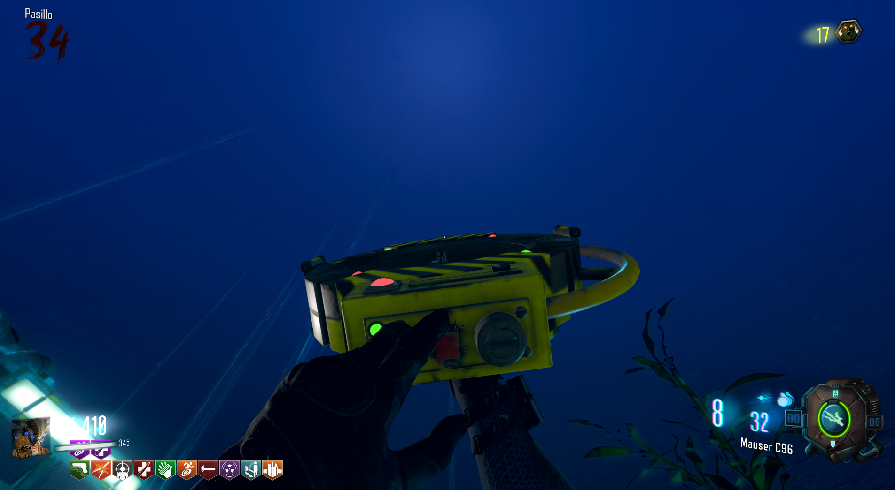

Dispositivo Gersk Gratis (Leviathan)

Para conseguir los dispositivos Gersk gratis, debemos de ir a la sala de la Terminal con el dispositivo hacker.
Tendremos que hackear la terminal grande y después matar a 30 zombies para cargarla.

Al finalizar, en los monitores se nos mostrará un código que tendremos que memorizar.
Después iremos al submarino e introduciremos el código en el panel.
Una vez le demos al ENTER, aparecerán los dispositivos Gersk.